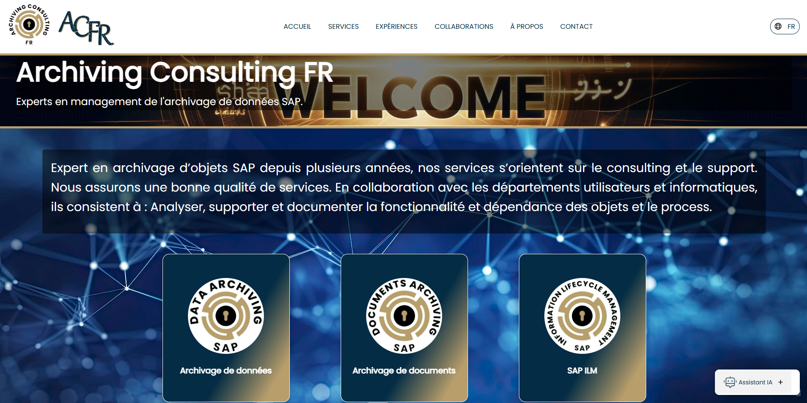
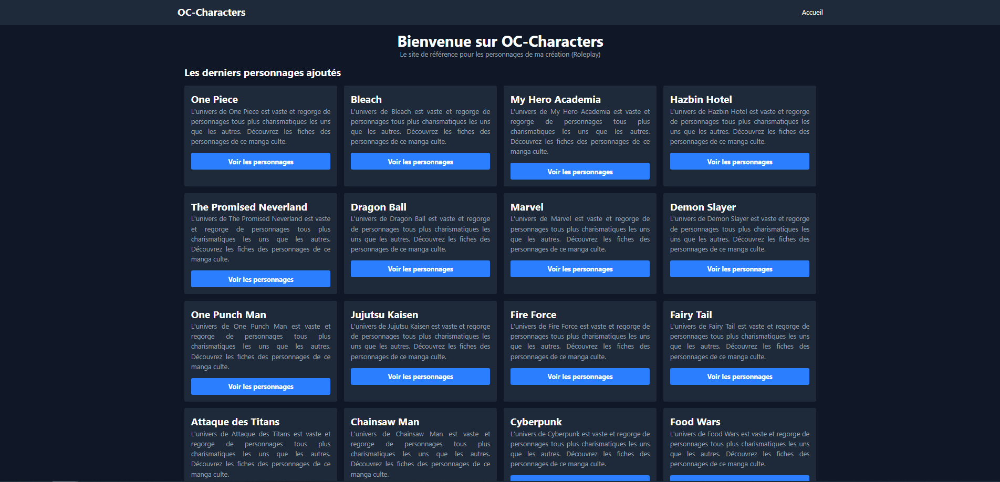
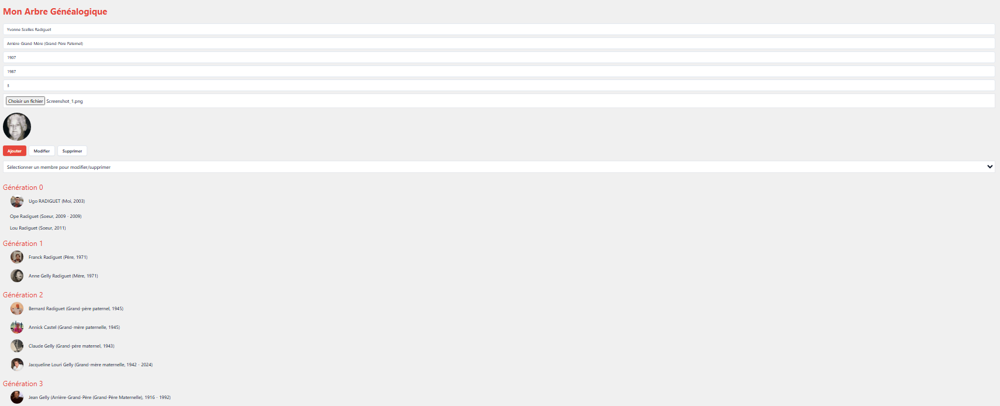
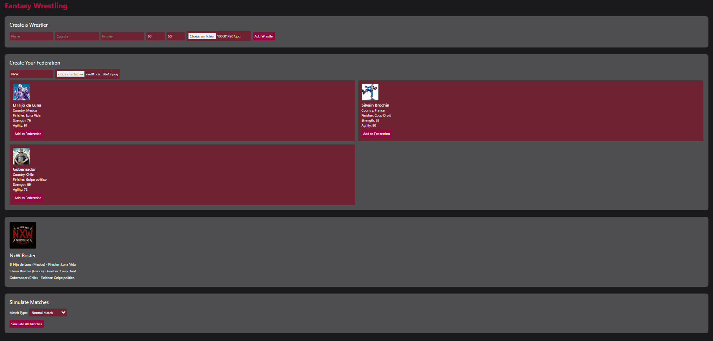
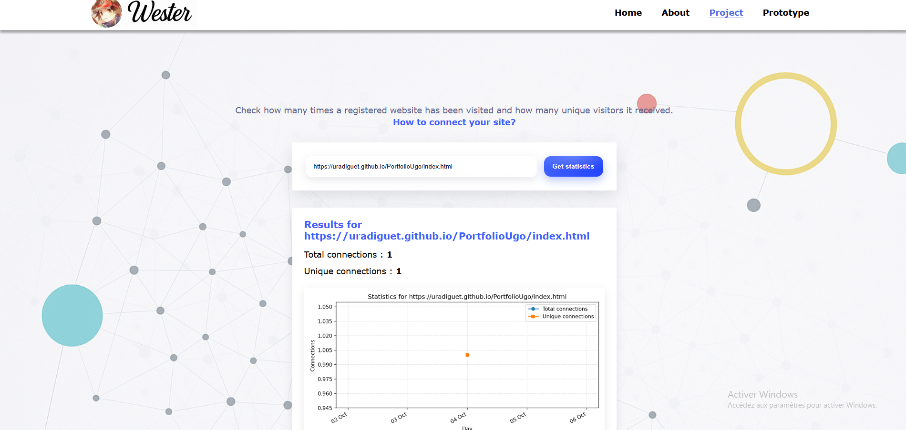
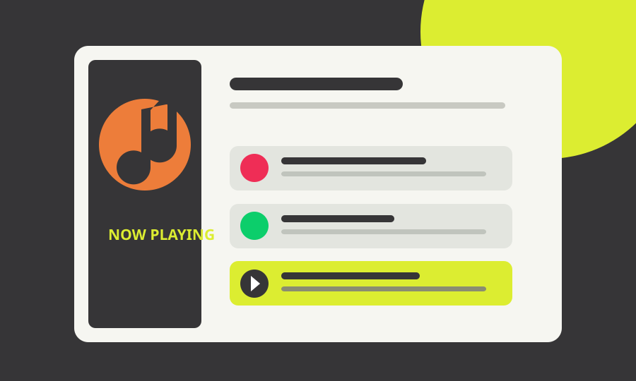
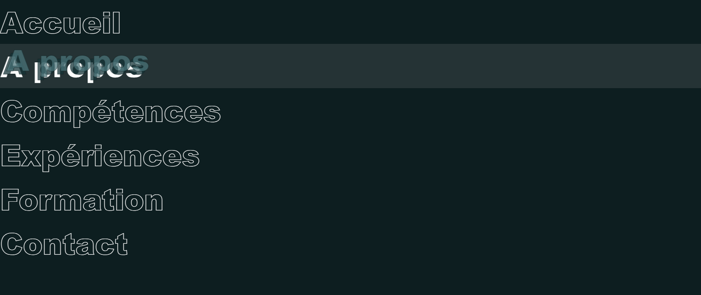
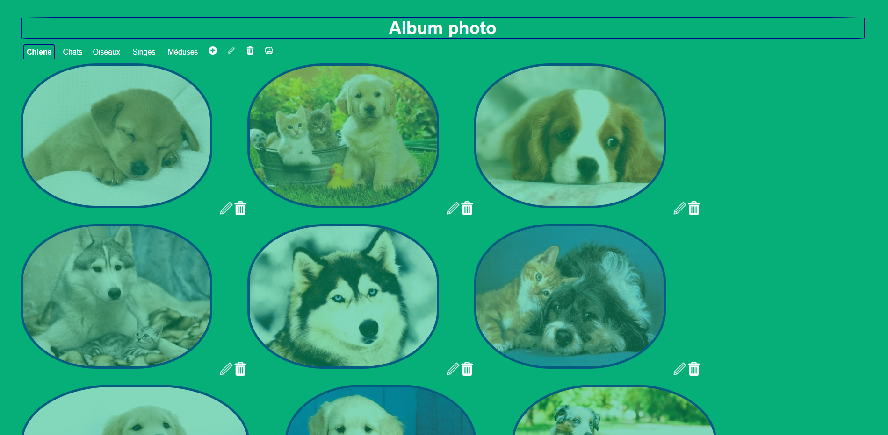
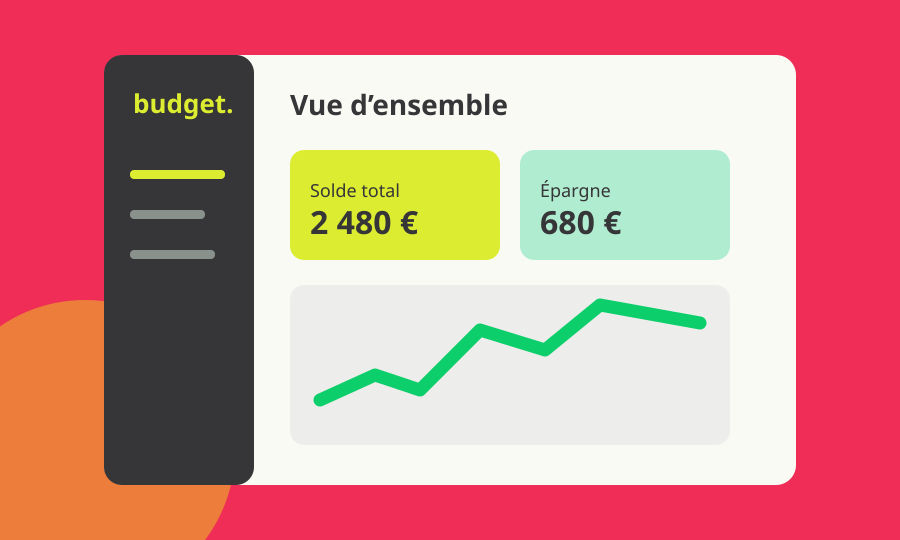
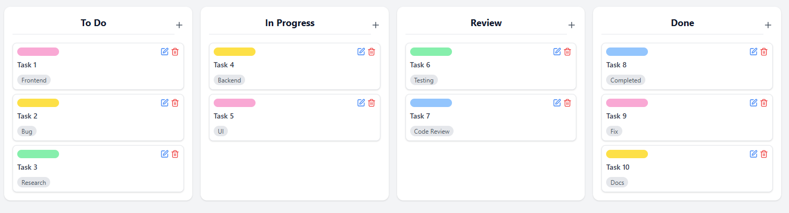

Développement web
Des sites rapides, accessibles et adaptés à tous les écrans, du concept au déploiement.
HTML · CSS · JavaScript · PHPHELLO, MOI C’EST UGO
Développeur web / Caen, France
J’imagine et je développe des expériences web qui ont du caractère. De la première idée au dernier détail, chaque projet mérite une interface qui lui ressemble.
Basé à Caen · Disponible pour échanger
01 / CE QUE JE FAIS
Concevoir, développer et faire évoluer des outils web utiles et vivants.
Des sites rapides, accessibles et adaptés à tous les écrans, du concept au déploiement.
HTML · CSS · JavaScript · PHPDes interfaces où l’on agit vraiment : données, parcours utilisateur et fonctionnalités sur mesure.
React · Next.js · SQLUne direction visuelle singulière, des interactions claires et des détails qui rendent l’usage agréable.
Responsive · Prototypage · UX02 / UN PEU DE MOI
Je suis Ugo Radiguet, développeur web basé à Caen. J’aime donner une forme concrète aux idées : réfléchir à l’expérience, construire l’interface, puis peaufiner ce petit détail qui change tout.
Mon parcours mêle projets personnels, formation en développement web et expérience chez Archiving Consulting FR. En dehors du code, je puise mes idées dans les jeux de rôle, le manga, la généalogie, le sport et les voyages.
Découvrir mon parcours ↗03 / MA BOÎTE À OUTILS
Une pratique polyvalente, du design de l’interface à la logique qui l’anime.
HTML · CSS · JavaScript · React · Next.js · Tailwind CSS
PHP · SQL · Java · Python · API REST
Figma · UI/UX · Responsive · Git · UML
J’apprends, je teste, je recommence. Chaque projet est une occasion d’aller plus loin.
04 / PROJETS SÉLECTIONNÉS
Une sélection de réalisations professionnelles, personnelles et de formation.

Site web, base de données et outils applicatifs réalisés au cours de deux stages.
Découvrir le projet ↗
Une plateforme full stack pour découvrir, créer et rejoindre des événements locaux.
Découvrir le projet ↗
Un répertoire pour imaginer et organiser des personnages et leurs univers.
Voir le projet ↗
Une exploration interactive de l’histoire familiale et de ses liens.
Voir le projet ↗
Une simulation de gestion du roster, des shows et du budget.
Voir le projet ↗
Un parcours guidé pour découvrir les fonctionnalités du portfolio.
Voir le projet ↗
Une playlist personnelle et un lecteur aux commandes interactives.
Voir le projet ↗
Mon premier portfolio, entre découverte du web et design responsive.
Voir le projet ↗
Galerie, import de photos et gestion des droits utilisateurs.
Voir le projet ↗
Une application pour suivre ses finances avec une interface claire.
Voir le projet ↗
Des tableaux visuels pour organiser les tâches et suivre les projets.
Voir le projet ↗05 / MON CHEMIN
Des études, de la pratique et une envie constante de créer.
CaenSup Sainte-Ursule · développement full stack et mobile
CaenSup Sainte-Ursule · solutions logicielles
Université de Caen · parcours initial
Lycée Dumont d’Urville, Caen
Archiving Consulting FR · site, base de données et suite applicative
Applications, répertoires créatifs, outils de gestion et expérimentations visuelles
Consultez mon CV et mes attestations.
06 / ON EN PARLE ?
Une idée de site, une collaboration ou simplement envie de discuter ? Racontez-moi votre projet, je serai ravi d’échanger.
M’écrire un message ↗ugo.radiguet@sts-sio-caen.info